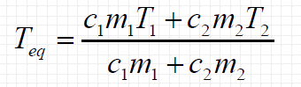

O equilíbrio térmico acontece quando dois corpos - inicialmente em
temperaturas diferentes - entram
em contato e
após um processo de transferência de calor, atingem a mesma temperatura.
Lembre-se de que o calor é sempre transferido do corpo de maior temperatura para o de menor
temperatura.
Fórmula para calcular o equilíbrio térmico é:

C1 e C2 é o calor específico, nesse site, utilizamos 1,00cal/g°C por ser
o calor específico da água
M1 e M2, a massa
T1 e
T2, a temperatura inicial
Teq,
a temperatura de equilíbrio térmico
Calcule o equilíbrio termico: